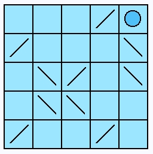

Reset (and a bug fix)
Addind a Reset capability is very straight-forward once the Undo capability is completed. The purpose of the Reset function is to reset the game board back to the beginning. This will allow the user to start over on any given game board. All the cells are reset to their starting conditions and the moves the user made are erased.
Before we do this however, I noticed a bug with our latest code that is easy to fix. When you first open up a new LaserGame morph, the Mirrors counter shows zero. This is incorrect. Modify the #xxx instance method on LaserGame to fix this problem. We need to update the counters when we launch.
initializeForGrid: aGrid
super initialize.
self moves: 0.
self grid: aGrid.
self boardForm: (Form extent: (self class boardExtentFor: self grid) depth: Display depth).
self boardForm fillColor: LaserGameColors gameBoardBackgroundColor.
self setExtent.
self setupMorphs.
self drawGameBoard.
self updateCounters.
Now we resume with implementation of Reset. Put a stub method on Grid.
reset
It doesn't do anything. No we write the unit test for Reset on the GridTestCase. We will use this familiar test setup again.

testResetGrid
| grid cell |
grid := self generateDemoGrid.
cell := grid at: 4@4.
self should: [cell class = BlankCell].
grid pushCellEastFromLocation: 3@3.
grid pushCellSouthFromLocation: 4@3.
cell := grid at: 3@3.
self should: [cell class = BlankCell].
cell := grid at: 4@3.
self should: [cell class = BlankCell].
cell := grid at: 4@4.
self should: [cell class = MirrorCell].
self should: [grid movesStack size = 2].
grid reset.
cell := grid at: 4@4.
self should: [cell class = BlankCell].
self should: [grid movesStack isEmpty].
We now go add the capability to Grid to actually make this happen. Change the #reset method on Grid.
reset
[self undo] whileTrue: []
The process to reset is easy. We just unwind the Undo stack until it's empty.
Now we add a button to the LaserGame morph. Add or modify these methods.
makeResetButton
^self makeButton: 'Reset' action: #reset state: nil
addButtonsToPanel: panel
| layout |
layout := self buttonLayoutFrameForRow: 1 column: 1.
panel addMorph: self makeQuitGameButton fullFrame: layout.
layout := self buttonLayoutFrameForRow: 1 column: 2.
panel addMorph: self makeFireLaserButton fullFrame: layout.
layout := self buttonLayoutFrameForRow: 2 column: 1.
panel addMorph: self makeNewGameButton fullFrame: layout.
layout := self buttonLayoutFrameForRow: 2 column: 2.
panel addMorph: self makeUndoButton fullFrame: layout.
layout := self buttonLayoutFrameForRow: 3 column: 1.
panel addMorph: self makeResetButton fullFrame: layout.
^panel
reset
self grid reset.
self grid stopLaser.
self moves: 0.
self activeCellLocation: nil.
self initializeDirty.
self updateGameBoardAndControls
Open up the new LaserGame morph and see how it works.

Once again, verify all the unit tests pass and then version the Laser-Game package as version 15 and the LaserGame-Tests package as version 2.